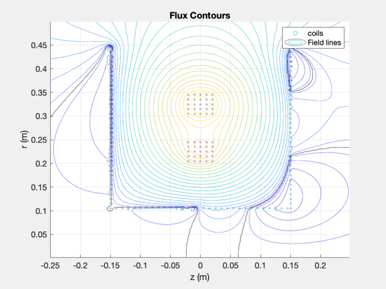

Flux conservation of series vs. individual loops
Compare effects of having multiple individually flux conserving loops (left side of plot) and having a small number of multiply-wound flux conserving loops in series (right side of plot)
See also: CoAxRectangle, CoAxConserveFluxes, CoAxPlotFlux
%-------------------------------------------------------------------------- % Copyright 2019 Princeton Satellite Systems, Inc. All rights reserved. %-------------------------------------------------------------------------- wR1 = 0.005; [rR1,zR1] = CoAxRectangle( 5, 5, 0.2, 0, wR1); IR1 = 1; CoilsRegular = [rR1(:),zR1(:),wR1*ones(numel(rR1),1),IR1*ones(numel(rR1),1)]; wR2 = 0.005; [rR2,zR2] = CoAxRectangle( 5, 5, 0.3, -0, wR2); IR2 = 1; CoilsRegular = [CoilsRegular;rR2(:),zR2(:),wR2*ones(numel(rR2),1),IR2*ones(numel(rR2),1)]; % Solenoid of multiply wound serial loops wC1 = 0.005; [rC1,zC1] = CoAxRectangle( 1, 15, 0.1, 0.05+5*wC1, wC1); IC1 = 0; CoilsConserving = {rC1,zC1,wC1,IC1}; % Disk of multiply would serial loops wC2 = 0.005; [rC2,zC2] = CoAxRectangle( 35, 1, 0.1, 0.15, wC2); IC2 = 0; CoilsConserving = [{CoilsConserving};{{rC2,zC2,wC2,IC2}}]; % Solenoid of individually wound loops zCSingles1 = (-2*wC1:-2*wC1:-0.14)'; rCSingles1 = (0.1+wC1)*ones(size(zCSingles1)); % Disk of individually wound loops rCSingles2 = (0.1+wC1:2*wC1:0.45)'; zCSingles2 = -0.15*ones(size(rCSingles2)); rCSingles = [rCSingles1;rCSingles2]; zCSingles = [zCSingles1;zCSingles2]; wCSingles = wC1 * ones(size(rCSingles)); ICSingles = zeros(size(rCSingles)); quantitiesCSingles = [rCSingles zCSingles wCSingles ICSingles]; cellsCSingles = num2cell(quantitiesCSingles); CoilsConserving = [CoilsConserving;mat2cell(cellsCSingles,ones(1,size(cellsCSingles,1)),4)]; % Call the conserving calculator ISC = CoAxConserveFluxes(CoilsRegular,CoilsConserving); % Prepare data for plotting rToPlot = CoilsRegular(:,1); zToPlot = CoilsRegular(:,2); IToPlot = CoilsRegular(:,4); for j = 1:size(CoilsConserving,1) rToPlot = [rToPlot;CoilsConserving{j}{1}(:)]; zToPlot = [zToPlot;CoilsConserving{j}{2}(:)]; IToPlot = [IToPlot;ISC(j)*ones([numel(CoilsConserving{j}{2}) 1])]; end % Plot rmax = 0.5; zmax = rmax/2; dx = 0.003; rS1 = dx/2:dx:rmax; zS1 = (-zmax:dx:zmax)'; rS = repmat(rS1,size(zS1)); zS = repmat(zS1,size(rS1)); CoAxPlotFlux(rS,zS,rToPlot,zToPlot,IToPlot); %--------------------------------------